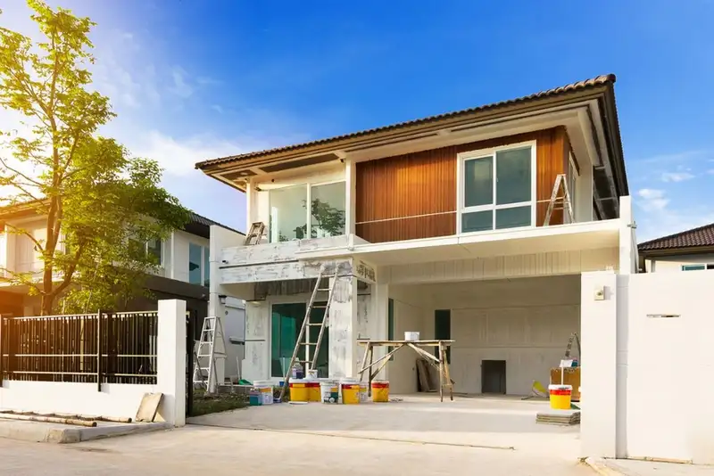

Daftar Isi
- Apa Saja Tahapan Bangun Rumah dari Nol?
- Bagaimana Tahap Perencanaan dan Desain Dilakukan Sesuai SOP?
- Perizinan Apa Saja yang Wajib Diurus Sebelum Membangun Rumah?
- Bagaimana Urutan Pekerjaan Struktur Rumah Sesuai SOP?
- Apa Saja Pekerjaan Finishing dalam Tahapan Bangun Rumah?
- Bagaimana Proses Serah Terima Kunci Rumah Sesuai SOP?
- Berapa Lama Waktu yang Dibutuhkan Membangun Rumah dari Nol?
- Apa Kesalahan Umum yang Terjadi Selama Proses Bangun Rumah?
- Tips Agar Proses Bangun Rumah Berjalan Sesuai SOP
- FAQ
Tahapan bangun rumah dari nol sampai serah terima kunci sesuai SOP terdiri dari lima fase utama: perencanaan, perizinan, pekerjaan struktur, pekerjaan finishing, dan serah terima kunci. Setiap fase memiliki standar kerja yang berurutan agar rumah aman huni dan sesuai desain.
- Proses bangun rumah dari nol umumnya berlangsung 4-8 bulan tergantung luas bangunan dan kompleksitas desain.
- SOP konstruksi mengharuskan urutan kerja yang tidak boleh dibalik, misalnya pondasi harus tuntas sebelum dinding dikerjakan.
- Perizinan seperti PBG (Persetujuan Bangunan Gedung) wajib diselesaikan sebelum pekerjaan fisik dimulai.
- Serah terima kunci baru boleh dilakukan setelah proses pemeriksaan cacat bangunan atau defect check selesai.
- Melibatkan pengawas proyek independen membantu memastikan setiap tahapan sesuai SOP dan spesifikasi kontrak.
Berdasarkan data Badan Pusat Statistik, sektor konstruksi perumahan di Indonesia tumbuh rata-rata di atas 5 persen per tahun pada periode 2023-2025, menandakan tingginya aktivitas pembangunan rumah baru oleh masyarakat maupun pengembang. Sementara itu, asosiasi kontraktor nasional mencatat bahwa keterlambatan proyek rumah tinggal skala kecil hingga menengah paling sering disebabkan oleh perencanaan anggaran yang tidak matang di tahap awal, bukan oleh faktor cuaca atau ketersediaan material.
Apa Saja Tahapan Bangun Rumah dari Nol?
Tahapan bangun rumah dari nol terdiri dari lima fase: perencanaan dan desain, pengurusan perizinan, pekerjaan struktur, pekerjaan arsitektur dan finishing, serta serah terima kunci. Kelima fase ini berjalan berurutan dan saling bergantung satu sama lain.
Perencanaan menjadi pondasi keberhasilan seluruh proyek. Pada tahap ini, pemilik rumah menentukan kebutuhan ruang, anggaran, dan gaya arsitektur bersama arsitek atau desainer. Hasil dari tahap ini berupa gambar kerja (detail engineering drawing) dan rencana anggaran biaya atau RAB yang menjadi acuan seluruh proses berikutnya.
Setelah desain final disepakati, pemilik rumah mengurus perizinan bangunan. Tahap ini tidak boleh dilewati karena menyangkut legalitas bangunan di kemudian hari, termasuk saat rumah akan dijual atau diagunkan ke bank.
Bagaimana Tahap Perencanaan dan Desain Dilakukan Sesuai SOP?
Tahap perencanaan sesuai SOP dimulai dari survei lokasi, analisis kondisi tanah, hingga penyusunan gambar kerja lengkap sebelum konstruksi fisik dimulai. Tanpa perencanaan yang matang, risiko pembengkakan biaya dan revisi desain di tengah proyek akan meningkat.
Beberapa langkah wajib pada tahap ini meliputi:
- Survei dan pengukuran lahan untuk memastikan luas dan batas tanah sesuai sertifikat.
- Uji sederhana kondisi tanah untuk menentukan jenis pondasi yang sesuai.
- Penyusunan denah, tampak, dan potongan bangunan oleh arsitek.
- Perhitungan RAB yang mencakup material, upah tukang, dan biaya tak terduga sekitar 10 persen dari total anggaran.
- Penentuan spesifikasi material, mulai dari jenis bata, kualitas besi, hingga merek cat.
Pemilik rumah yang bekerja sama dengan kontraktor bangunan berpengalaman pada tahap ini biasanya mendapatkan estimasi biaya yang lebih akurat karena kontraktor telah memiliki data harga material dan upah terkini di wilayah tersebut.
Perizinan Apa Saja yang Wajib Diurus Sebelum Membangun Rumah?
Perizinan wajib yang harus diurus sebelum membangun rumah adalah PBG atau Persetujuan Bangunan Gedung, yang menggantikan Izin Mendirikan Bangunan (IMB) sejak diberlakukannya sistem perizinan berbasis risiko. Dokumen ini menjadi syarat legal agar bangunan diakui negara dan terhindar dari risiko pembongkaran.
Proses pengurusan PBG umumnya melibatkan pengajuan dokumen kepemilikan tanah, gambar arsitektur, dan perhitungan struktur ke dinas terkait di wilayah setempat. Lama proses bervariasi tergantung kelengkapan dokumen dan kebijakan daerah masing-masing.
Selain PBG, pemilik rumah juga perlu memastikan tidak ada sengketa lahan dan memeriksa apakah lokasi tanah termasuk dalam zona hijau atau kawasan terlarang untuk bangunan hunian.
Bagaimana Urutan Pekerjaan Struktur Rumah Sesuai SOP?
Urutan pekerjaan struktur rumah sesuai SOP dimulai dari pekerjaan tanah dan pondasi, dilanjutkan struktur kolom dan balok, lalu pemasangan dinding, dan diakhiri dengan pekerjaan atap. Urutan ini bersifat baku karena setiap elemen struktur menjadi penopang elemen berikutnya.
Pekerjaan tanah meliputi galian pondasi dan pemadatan tanah dasar. Setelah itu, pondasi dicor sesuai jenis yang telah ditentukan pada tahap perencanaan, baik pondasi batu kali, footplat, maupun cakar ayam tergantung kondisi tanah dan jumlah lantai bangunan.
Setelah pondasi mengeras dengan sempurna, pekerjaan dilanjutkan ke struktur kolom dan balok menggunakan beton bertulang. Barulah setelah struktur utama berdiri, pasangan dinding bata atau bata ringan dikerjakan, diikuti pemasangan rangka dan penutup atap.
Kesalahan umum pada tahap ini adalah mempercepat waktu pengeringan beton demi mengejar target waktu, padahal proses curing beton yang tidak sempurna dapat menurunkan kekuatan struktur dalam jangka panjang.
Apa Saja Pekerjaan Finishing dalam Tahapan Bangun Rumah?
Pekerjaan finishing dalam tahapan bangun rumah meliputi plesteran dan acian dinding, instalasi listrik dan pipa air, pemasangan keramik, pengecatan, hingga pemasangan kusen dan pintu. Tahap ini menentukan tampilan akhir sekaligus kenyamanan rumah untuk dihuni.
Instalasi mekanikal dan elektrikal, seperti jalur pipa air bersih, saluran pembuangan, dan kabel listrik, idealnya dipasang sebelum dinding diplester agar tidak merusak hasil akhir dinding. Setelah itu, proses plesteran, acian, dan pengecatan dilakukan bertahap dengan jeda waktu pengeringan yang cukup di setiap lapisan.
Pemasangan keramik lantai dan dinding kamar mandi dilakukan setelah instalasi pipa selesai diuji tekanan air untuk memastikan tidak ada kebocoran tersembunyi di dalam dinding.
Bagaimana Proses Serah Terima Kunci Rumah Sesuai SOP?
Proses serah terima kunci rumah sesuai SOP dilakukan melalui pemeriksaan bersama atau defect check antara pemilik rumah dan kontraktor untuk memastikan tidak ada cacat bangunan sebelum kunci diserahkan secara resmi. Tahap ini sering dilewatkan padahal berperan penting melindungi hak pemilik rumah.
Pada tahap defect check, pemilik rumah didampingi kontraktor atau pengawas memeriksa seluruh bagian rumah, mulai dari kerataan dinding, fungsi pintu dan jendela, aliran air, hingga instalasi listrik. Setiap temuan cacat dicatat dalam berita acara dan menjadi tanggung jawab kontraktor untuk diperbaiki sebelum serah terima final.
Setelah seluruh temuan diperbaiki, barulah dilakukan serah terima kunci secara resmi yang disertai dokumen seperti garansi struktur, gambar as-built, dan manual perawatan bangunan.
Berapa Lama Waktu yang Dibutuhkan Membangun Rumah dari Nol?
Waktu yang dibutuhkan membangun rumah dari nol umumnya berkisar 4 sampai 8 bulan untuk rumah tipe menengah dengan luas bangunan 60 sampai 100 meter persegi, tergantung kompleksitas desain dan ketersediaan tenaga kerja. Rumah dengan desain lebih kompleks atau bertingkat bisa membutuhkan waktu lebih lama.
Faktor yang memengaruhi durasi pembangunan antara lain kondisi cuaca, kelancaran distribusi material, jumlah tukang yang bekerja, serta kecepatan proses pengambilan keputusan pemilik rumah terkait perubahan desain di tengah jalan.
Apa Kesalahan Umum yang Terjadi Selama Proses Bangun Rumah?
Kesalahan umum yang sering terjadi selama proses bangun rumah adalah anggaran yang tidak menyertakan dana cadangan, mengubah desain di tengah proses konstruksi, dan tidak melibatkan pengawas independen untuk mengontrol kualitas kerja tukang.
Perubahan desain di tengah jalan menjadi salah satu penyebab utama pembengkakan biaya dan mundurnya jadwal, karena sebagian pekerjaan yang sudah selesai harus dibongkar ulang. Selain itu, minimnya pengawasan membuat kualitas pekerjaan sulit dikontrol, terutama jika pemilik rumah tidak memiliki latar belakang teknis konstruksi.
Tips Agar Proses Bangun Rumah Berjalan Sesuai SOP
Beberapa tips agar proses bangun rumah berjalan sesuai SOP antara lain menyiapkan RAB dengan dana cadangan, memilih kontraktor dengan portofolio jelas, serta melakukan pemeriksaan berkala di setiap tahap pekerjaan.
- Siapkan dana cadangan minimal 10-15 persen dari total RAB untuk mengantisipasi biaya tak terduga.
- Pilih kontraktor atau tukang yang memiliki rekam jejak dan referensi proyek sebelumnya.
- Buat kesepakatan tertulis mengenai spesifikasi material dan jadwal kerja di awal proyek.
- Lakukan kunjungan rutin ke lokasi untuk memantau progres dan kualitas pekerjaan.
- Jangan lakukan serah terima kunci sebelum proses defect check selesai sepenuhnya.